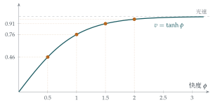

STEP III 2019，第 2 題
繼續之前，請先閱讀題目（原題為英文）。題目載於 OCR 提供下載的 2019 年 STEP 試卷（zip 檔案）內的 STEP III 試卷： www.ocr.org.uk/Images/696590-2019-past-papers.zip
引子
你怎樣知道 \(e^x\) 是甚麼？在學校裏，它是透過複利息引入的，或者說成是導數（derivative）等於自身的函數，又或者寫成 \(\lim (1 + x/n)^n\)。這道題給出另一個答案：\(e^{kx}\) 是唯一能把加法變成乘法的可微（differentiable）函數，即 \(\mathrm{f}(x + y) = \mathrm{f}(x)\mathrm{f}(y)\)。單憑這條規則，再加上一個數 \(\mathrm{f}'(0)\)，就足以把這個函數完全確定下來。
第二部分對一條較陌生的規則做同樣的事：\(\mathrm{g}(x + y) = \frac{\mathrm{g}(x) + \mathrm{g}(y)}{1 + \mathrm{g}(x)\mathrm{g}(y)}\)。如果你覺得這條公式似曾相識，那就對了：它正是狹義相對論（special relativity）中愛因斯坦（Einstein）的速度相加法則，只是把光速設為 \(1\)。這條規則迫使函數必然是 \(\tanh\)，而這正好解釋了為何任何物體都不能被加速至超越光速。
動筆之前
像 \(\mathrm{f}(x + y) = \mathrm{f}(x)\mathrm{f}(y)\) 這樣以函數為未知量的方程，稱為函數方程（functional equation）。
這條方程對所有 \(x\) 和 \(y\) 都成立。最值得首先嘗試的是甚麼？
特殊值。設 \(y = 0\)（或 \(x = y\)，或 \(y = -x\)），往往不費甚麼工夫就能得到大量資料。兩個部分都是這樣起步的。
逐步解題
階段 1 在零處的值
代入 \(x = y = 0\)：\(\mathrm{f}(0) = \mathrm{f}(0)^2\)，所以 \(\mathrm{f}(0) = 0\) 或 \(1\)。
如果 \(\mathrm{f}(0) = 0\)，會出甚麼問題？
若 \(\mathrm{f}(0) = 0\)，則代入 \(y = 0\) 可得對每個 \(x\) 都有 \(\mathrm{f}(x) = \mathrm{f}(x)\mathrm{f}(0) = 0\)。於是 \(\mathrm{f}\) 恆等於零，且 \(\mathrm{f}'(0) = 0\)，與 \(\mathrm{f}'(0) = k \neq 0\) 矛盾。所以 \(\mathrm{f}(0) = 1\)。■
階段 2 由零處的導數得出處處的導數
在 \((*)\) 中，寫成 \(\mathrm{f}(x + h) = \mathrm{f}(x)\mathrm{f}(h)\)。有甚麼可以抽到極限之外？
\[\begin{aligned} \mathrm{f}'(x) &= \lim_{h \to 0} \frac{\mathrm{f}(x)\mathrm{f}(h) - \mathrm{f}(x)}{h} = \mathrm{f}(x)\lim_{h \to 0}\frac{\mathrm{f}(h) - 1}{h} \\ &= \mathrm{f}(x)\lim_{h \to 0}\frac{\mathrm{f}(0 + h) - \mathrm{f}(0)}{h} = \mathrm{f}(x)\,\mathrm{f}'(0) = k\,\mathrm{f}(x). \qed \end{aligned}\] 函數方程讓我們把 \(0\) 附近的性態搬到其他每一點去。
階段 3 求解 \(\mathrm{f}' = k\mathrm{f}\)
考慮 \(\mathrm{u}(x) = \mathrm{f}(x)e^{-kx}\)。則 \(\mathrm{u}'(x) = \bigl(\mathrm{f}'(x) - k\mathrm{f}(x)\bigr)e^{-kx} = 0\)，所以 \(\mathrm{u}\) 是常數，而 \(\mathrm{u}(0) = \mathrm{f}(0) = 1\)。因此 \[\mathrm{f}(x) = e^{kx}. \qed\] （分離變數（separating the variables），\(\int \frac{\mathrm{d}\mathrm{f}}{\mathrm{f}} = \int k\,\mathrm{d}x\)，會得到相同的答案，但需要 \(\mathrm{f}(x) \neq 0\)；用 \(\mathrm{u}\) 這個技巧就免卻了這重顧慮。）
階段 4 第二條規則
在 \(\mathrm{g}\) 的規則中代入 \(y = 0\)。這告訴你 \(\mathrm{g}(0)\) 是甚麼？\(|\mathrm{g}(x)| < 1\) 在哪裏派上用場？
取 \(y = 0\)：\(\mathrm{g}(x)\bigl(1 + \mathrm{g}(x)\mathrm{g}(0)\bigr) = \mathrm{g}(x) + \mathrm{g}(0)\)，化簡後得 \(\mathrm{g}(0)\bigl(\mathrm{g}(x)^2 - 1\bigr) = 0\)。由於 \(|\mathrm{g}(x)| < 1\)，括號內的式子永不為零，所以 \(\mathrm{g}(0) = 0\)。
現在利用這條規則計算 \(\mathrm{g}(x + h) - \mathrm{g}(x)\)，化簡，除以 \(h\)，再令 \(h \to 0\)。
\[\mathrm{g}(x + h) - \mathrm{g}(x) = \frac{\mathrm{g}(x) + \mathrm{g}(h) - \mathrm{g}(x) - \mathrm{g}(x)^2\mathrm{g}(h)}{1 + \mathrm{g}(x)\mathrm{g}(h)} = \frac{\mathrm{g}(h)\bigl(1 - \mathrm{g}(x)^2\bigr)}{1 + \mathrm{g}(x)\mathrm{g}(h)}.\] 除以 \(h\)。當 \(h \to 0\) 時，\(\frac{\mathrm{g}(h)}{h} = \frac{\mathrm{g}(h) - \mathrm{g}(0)}{h} \to \mathrm{g}'(0) = k\)，而 \(\mathrm{g}(h) \to \mathrm{g}(0) = 0\)（可微函數必定連續（continuous）），所以分母趨向 \(1\)。因此 \[\mathrm{g}'(x) = k\bigl(1 - \mathrm{g}(x)^2\bigr). \qed\]
階段 5 求解
分離變數。當 \(|g| < 1\) 時，哪個函數的導數是 \(\frac{1}{1 - g^2}\)？
由於 \(|\mathrm{g}| < 1\)，我們可以相除：\(\dfrac{\mathrm{g}'}{1 - \mathrm{g}^2} = k\)。函數 \(\operatorname{artanh} g = \frac12\ln\frac{1 + g}{1 - g}\) 的導數是 \(\frac{1}{1 - g^2}\)，所以 \(\frac{\mathrm{d}}{\mathrm{d}x}\operatorname{artanh}\mathrm{g}(x) = k\)，而 \(\operatorname{artanh}\mathrm{g}(x) = kx + C\)。由 \(\mathrm{g}(0) = 0\) 得 \(C = 0\)，所以 \[\mathrm{g}(x) = \tanh kx. \qed\] 驗算：加法公式 \(\tanh(A + B) = \dfrac{\tanh A + \tanh B}{1 + \tanh A\tanh B}\) 正正就是題目給出的規則。
回顧
先試特殊值。代入 \(y = 0\) 便求得 \(\mathrm{f}(0)\) 和 \(\mathrm{g}(0)\)。
由一點到處處。加法定律（addition law）把 \(0\) 處的導數搬到每個 \(x\)，把函數方程化為微分方程（differential equation）。
唯一性（uniqueness）。這個論證不單是驗證 \(e^{kx}\) 和 \(\tanh kx\) 符合要求，更證明了它們是僅有的可能。函數方程之所以能成為定義，原因正在於此。
背後的數學
在日常生活中，如果一列火車以速率 \(u\) 行駛，而你在車廂內以速率 \(v\) 向前走，你相對於地面的速率就是 \(u + v\)。愛因斯坦在 1905 年證明這只是一個近似。正確的法則（其中 \(c\) 為光速）是 \[u \oplus v = \frac{u + v}{1 + uv/c^2}.\] 若以 \(c\) 的分數來量度速率，這正是 \(\mathrm{g}\) 的規則。我們的結果說明，如果把每個速度寫成 \(v = \tanh\phi\)，那麼速度的合成就是把各個 \(\phi\) 相加。\(\phi = \operatorname{artanh} v\) 這個量稱為快度（rapidity）。火箭引擎每次推進都會增加固定份量的快度，但由於對每個 \(\phi\) 都有 \(\tanh\phi < 1\)，速度只會愈來愈接近光速，卻永遠達不到（圖 3.8.1）。把 \(0.9c\) 與 \(0.9c\) 合成，得到的不是 \(1.8c\)，而是 \(\frac{1.8}{1.81}c \approx 0.9945c\)。

柯西函數方程
最簡單的函數方程是 \(\mathrm{f}(x + y) = \mathrm{f}(x) + \mathrm{f}(y)\)，柯西（Cauchy）在 1821 年研究過它。如果 \(\mathrm{f}\) 可微，用本題的方法可證明 \(\mathrm{f}(x) = kx\)。事實上只要連續就夠了。但若完全不作任何正則性（regularity）假設，就會有其他極其怪異的解，它們的圖像稠密地散佈在整個平面上。Georg Hamel 在 1905 年構造出這些解；這個構造需要用到選擇公理（axiom of choice），而且不可能把其中任何一個明確地寫出來。這就是題目堅持 \(\mathrm{f}\) 可微的原因之一：這個假設並非例行公事。
同態
\(\mathrm{f}(x + y) = \mathrm{f}(x)\mathrm{f}(y)\) 的意思是，\(\mathrm{f}\) 把實數的加法變成正實數的乘法，並且保持兩者的結構。用大學一年級代數的語言來說，\(\mathrm{f}\) 是由 \((\mathbb{R}, +)\) 到 \((\mathbb{R}_{>0}, \times)\) 的羣同態（group homomorphism），而對數就是它的反函數。數學中許多最重要的函數，都是這樣由它們所保持的結構來刻劃的。在 第 7.6 節 中，我們會看到 \(\tanh\) 的幾何意義：它量度的是「雙曲角」（hyperbolic angle），而它的加法定律來自雙曲旋轉的複合。
思維技巧
不用公式，而是用函數所遵守的規則來描述它，並證明只有一個函數遵守這條規則。
數學家往往就是這樣看待 \(\exp\)、\(\sin\)、\(\cos\) 和許多其他函數的：不把它們看成公式，而是看成函數方程或微分方程的唯一解。這解釋了它們為何重要，而不只是怎樣計算它們。
延伸練習
正切的規則。設 \(\mathrm{g}\) 可微，\(\mathrm{g}'(0) = k \neq 0\)，且只要等式兩邊都有定義，就有 \(\mathrm{g}(x + y) = \dfrac{\mathrm{g}(x) + \mathrm{g}(y)}{1 - \mathrm{g}(x)\mathrm{g}(y)}\)。證明 \(\mathrm{g}'(x) = k\bigl(1 + \mathrm{g}(x)^2\bigr)\)，並由此推出在 \(x = 0\) 附近 \(\mathrm{g}(x) = \tan kx\)。
柯西方程。若 \(\mathrm{f}\) 可微，且對所有 \(x\)、\(y\) 都有 \(\mathrm{f}(x + y) = \mathrm{f}(x) + \mathrm{f}(y)\)，證明 \(\mathrm{f}(x) = kx\)。
不用導數。 較難 只假設 \(\mathrm{f}(x + y) = \mathrm{f}(x)\mathrm{f}(y)\) 及 \(\mathrm{f}(1) = a > 0\)。證明對正整數 \(n\) 有 \(\mathrm{f}(n) = a^n\)，然後證明 \(\mathrm{f}(1/n) = a^{1/n}\)，再證明對每個正有理數 \(q\) 都有 \(\mathrm{f}(q) = a^q\)。（為甚麼要再進一步就需要連續性？）
火箭科學。一枚火箭每次點火，都能相對於它當時所處的參考系把速率增加 \(0.5c\)。由靜止開始，經過 \(2\)、\(3\) 和 \(4\) 次點火後，它（相對於起點）的速率是多少？請使用快度。
延伸閱讀
Christopher Small, Functional Equations and How to Solve Them（Springer）。一本淺白易讀的函數方程入門書，以喜歡解題的讀者為對象。
Edwin Taylor & John Wheeler, Spacetime Physics（W. H. Freeman）。狹義相對論的經典入門書，全書都使用快度。
Tom Körner, Calculus for the Ambitious（Cambridge University Press）。由指數函數和三角函數的性質出發來定義它們，與本節的精神完全一致。